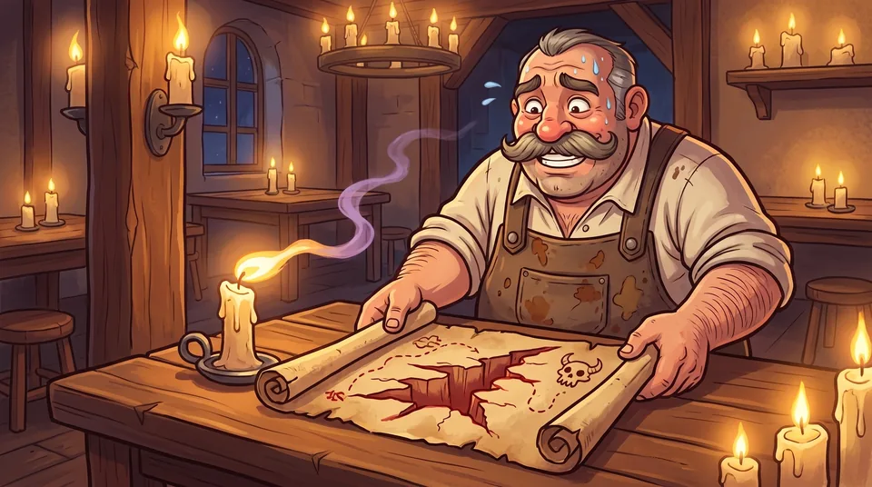
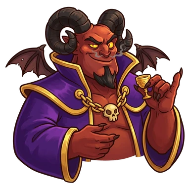
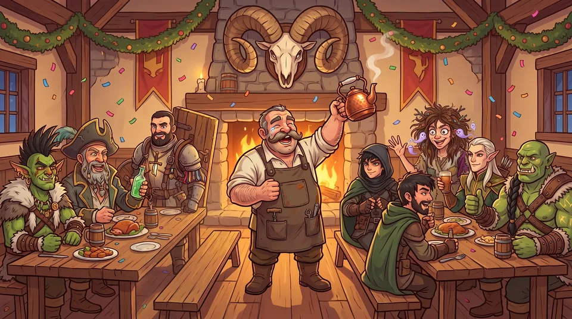

El Abismo

Se abre cuando un aventurero llega a Nv 20. Cada tanto aparece una misión del Abismo en el tablero (una por vez): 12 horas, 4 aventureros y como mucho 50% de éxito. Cada victoria da un Trofeo (+1% de ingresos para siempre, hasta 10) y hace Caminantes del Abismo a los héroes y leyendas que fueron. Con los 15 Caminantes, Malgoroth te espera. Además: 2 habitaciones más para veteranos, y las leyendas que despediste pueden volver en un rumor.
- Cada expedición nueva tiene 25% de ser del Abismo, si no hay otra en el tablero o en curso.
- Trofeos: +1% de ingresos cada uno, hasta 10. Sobreviven al Gremio.
- Las heridas del Abismo son graves: 12 h.
- Con el Abismo abierto, las leyendas que despediste pueden volver en un rumor, y hay 2 habitaciones más para veteranos.
La Raid de Malgoroth

Van los 15 juntos, durante 24 horas. Si pierden, vuelven heridos (12 h) y Malgoroth queda más débil para la próxima. Si ganan: título de Matademonios, marco dorado y +10% de ingresos para siempre. Se gana una sola vez.
- Requisito: los 15 héroes y leyendas, en Nv 20, Caminantes del Abismo, sanos y en la Posada.
- Chance: 30% el primer intento, +5% por cada fracaso, hasta 50%. Dura 24 h y no hay combos.
El final · Mostrar spoiler

La Posada festeja
¡HOOOO! ¡HOOOOOOO! No puedo parar de llorar. Malgoroth derrotado, los quince sanos (más o menos) y los cuernos arriba de la chimenea. Yo sabía. Bueno, no sabía. Pero tenía fe. ¡Té para todos, invita la casa!
Los 15 son Matademonios, con marco dorado, y tus ingresos suben +10% para siempre.